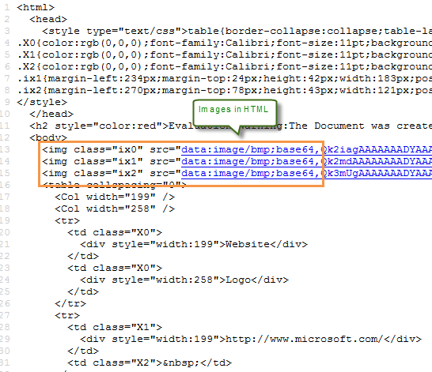

Convert Excel to HTML with Formatting in C#
Introduction
If you created a pretty Excel table and now want to publish it online as a web page, the simplest way is to export it to an old good HTML file. This sample is aimed to deliver a C# solution to convert Excel to HTML with its original layout.
This solution is based on a .NET Excel component which is available on CodePlex (http://spreadsheet.codeplex.com/), download the package and unzip it, you’ll get .dll file and sample demo & code at the same time. Create or open a .NET class application in Visual Studio 2005 or above versions, add Spire.XLS.dll as a reference to your .NET project assemblies, set “Target framework” to “.NET Framework 4”, then you’re able to convert Excel file to HTML page with sample code below.
namespace ExceltoHTML
{
class Program
{
static void Main(string[] args)
{
//load Excel file
Workbook workbook = new Workbook();
workbook.LoadFromFile(@"Book1.xlsx");
//convert Excel to HTML
Worksheet sheet = workbook.Worksheets[0];
sheet.SaveToHtml("sample.html");
//Preview HTML
System.Diagnostics.Process.Start("sample.html");
}
}
}
namespace ExceltoHTML { class Program { static void Main(string[] args) { //load Excel file Workbook workbook = new Workbook(); workbook.LoadFromFile(@"Book1.xlsx"); //convert Excel to HTML Worksheet sheet = workbook.Worksheets[0]; sheet.SaveToHtml("sample.html"); //Preview HTML System.Diagnostics.Process.Start("sample.html"); } } }
Screenshot of Output

Note:
While using this method to generate HTML page from Excel, a supporting folder will be generated to hold the images that are embedded in the Excel table. If you don’t want such a supporting folder due to any reason, you can embed the images into HTML code when converting Excel to HTML using following code:
namespace ExceltoHTML
{
class Program
{
static void Main(string[] args)
{
// create Workbook instance and load file
Workbook book = new Workbook();
book.LoadFromFile("Book1.xlsx");
// embed image into html when converting
HTMLOptions options = new HTMLOptions();
options.ImageEmbedded = true;
// save the sheet to html
book.Worksheets[0].SaveToHtml("sample.html", options);
System.Diagnostics.Process.Start("sample.html");
}
}
}
namespace ExceltoHTML { class Program { static void Main(string[] args) { // create Workbook instance and load file Workbook book = new Workbook(); book.LoadFromFile("Book1.xlsx"); // embed image into html when converting HTMLOptions options = new HTMLOptions(); options.ImageEmbedded = true; // save the sheet to html book.Worksheets[0].SaveToHtml("sample.html", options); System.Diagnostics.Process.Start("sample.html"); } } }
After running the code, you’ll find images have been embedded into HTML code.

More Information
Spire.XLS for .NET is a standalone Excel .NET managed assembly and does not depend on Microsoft Office Excel. Spire.XLS for .NET offers support both for the old Excel 97-2003 format (.xls) and for the new Excel 2007,Excel 2010 and Excel 2013 (.xlsx, .xlsb, .xlsm), along with Open Office(.ods) format. It features fast and reliably compared to developing your own spreadsheet manipulation solution or using Microsoft Automation.
Related links
Website: www.e-iceblue.com
Product Home:
Free Spire.XLS for .NET
Download:
Spire.XLS for. NET
Forum:
Spire.XLS forum